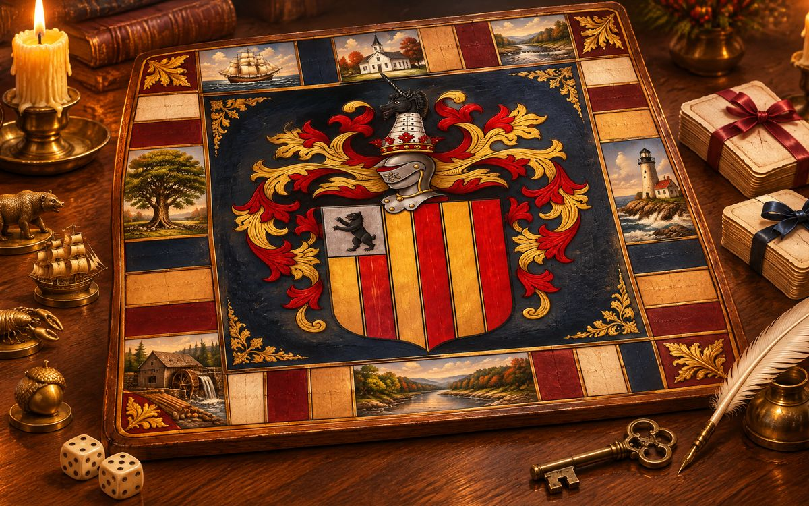

Treatopoly
The family's board game: forty spaces in order from Set Sail 1637 to Return to Pitminster, the Charter Oak and the Family Bible for the two decks, a lobster bake for free parking. Play online with family in other houses, or against bots named for the ancestors.
Play Treatopoly